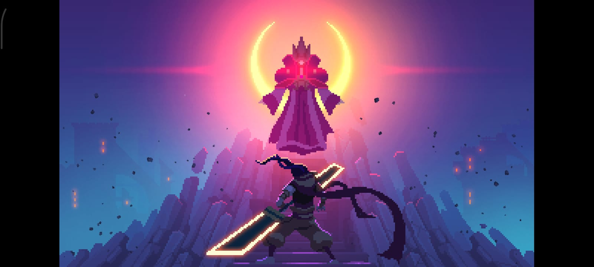

Perkenalan Diri
Nama : Yoel Julian Silalahi
NIM : 41426020
Kelas : 41TRPL1
Nama : Yoel Julian Silalahi
NIM : 41426020
Kelas : 41TRPL1

| Tanggal | Kegiatan | Tempat | Status |
|---|---|---|---|
| 18 September 2026 | Lokakarya HTML | Laboratorium | Not done |
| 25 september 2026 | wisuda tingkat akhir | IT Del | Not Done |
| 26 september 2026 | Pengukuhan | GSG | Not Done |
| 18 September 2026 | Gladi Kotor Inagurasi | GSG | Sedang Berjalan |
| 20 September 2026 | Ibadah Minggu | Auditorium | Not Done |